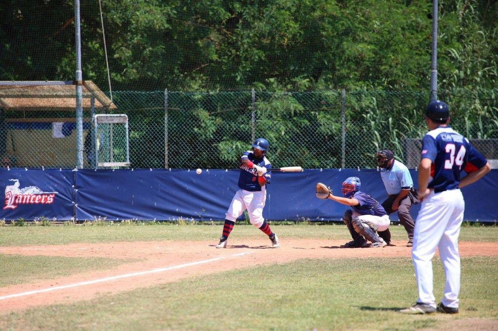
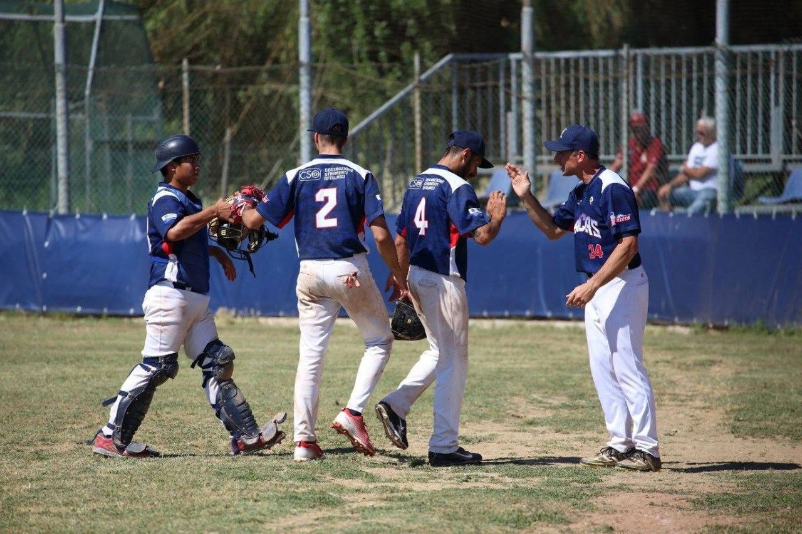

Non ci nascondiamo certamente dietro alle scuse ma la giornata è stata molto calda mettendo tutti quanti gli atleti scesi in campo a dura prova.
In gara 1 la difesa, con ben sei errori, non ha supportato a dovere il partente Vannini, rimasto sul monte per 7 riprese concedendo 8 valide, 3 punti a carico e mettendo a referto 5 strikeout.
In attacco la squadra poteva fare certamente qualcosa in più, al 27esimo out si potranno contare 9 valide colpite (contro le 12 totali dei labronici) e soli 3 punti segnati che niente hanno potuto contro i 10 dei nostri avversari.
Buona prova di Lapini negli ultimi due inning sul monte di lancio, bene nel box Bosi, Diaz e Becattini che chiudono la gara mattutina con 2 valide su 4 turni.
Nel caldo del pomeriggio la palla del partente viene affidtaa a Bosi che nelle 7 riprese a disposizione chiude bene le porte del Livorno, la difesa mostra altri segnali di scarsa lucidità ma questa volta il Livorno non ne approfitta.

Il Livorno, sul parziale di 10 a 1, trova la forza per recuperare marginalmente lo svantaggio segnando 3 punti sul rilievo Pistol, i Lancers al cambio campo chiudono definitivamente la pratica portando a segnare 4 corridori sul rilievo Luschi merito di 3 valide e un errore difensivo.
I risultati da gli altri campi sono favorevoli ai Lancers che mantengono la seconda posizione, infatti lo Junior Parma pareggia con Crocetta, Poviglio completa una faticosa doppietta sul campo del Lucca e Rovigo a sua volta non concede spazi al Pianoro.
Con questi risultati Poviglio si allontana dalla zona calda che vede coinvolte almeno quattro squadre, i ragazzi di Gentilini e Ciappi adesso dovranno restare concentrati e allenarsi ancor più duramente se vorranno mantenere i risultati ottenuti nel girone d’andata.
Prossimo impegno in trasferta sul difficile campo dello Junior Parma.